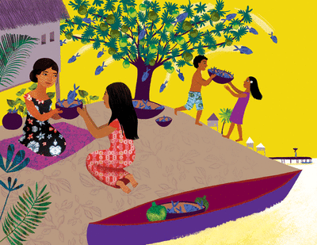

Le jeune homme demanda un jour à Milad : « Maman, chaque jour nous mangeons la même nourriture, des taros et encore des taros, et toujours des taros, pourquoi n'y a-t-il pas autre chose ? – Je suis pauvre, mon fils, je suis une femme qui n'a qu'un petit lopin de terre. Je n'ai pas d'autre nourriture, je n'ai même pas de mari qui pourrait aller pêcher. »
Terkelel se promena le long du rivage et chercha parmi les coquillages celui qui lui dirait comment aider Milad. Il trouva soudain ce qu'il cherchait, mais pas parmi les coquillages.
Terkelel plongea dans la mer et nagea, nagea, très, très loin. Puis il plongea, la tête la première et s'enfonça, s'enfonça, jusqu'à arriver profondément sous l'île. Comme un ver, il remonta en perçant la terre de toute l'île et déboucha sous l'arbre à pain qui ombrageait la cabane de sa mère.
Il fora d'abord son tronc, puis ses branches, et tandis qu'il avançait ainsi, derrière lui jaillissait l'eau de la mer, entraînant avec elle les poissons. Ils nageaient dans les creux de l'arbre et des branches, puis retombaient devant la maison de Milad. Maintenant la femme et le jeune Terkelel avaient du poisson à ne plus savoir qu'en faire. Ils en avaient tant qu'ils en donnaient aux gens qui n'avaient pas assez à manger. Le poisson était abondant.
